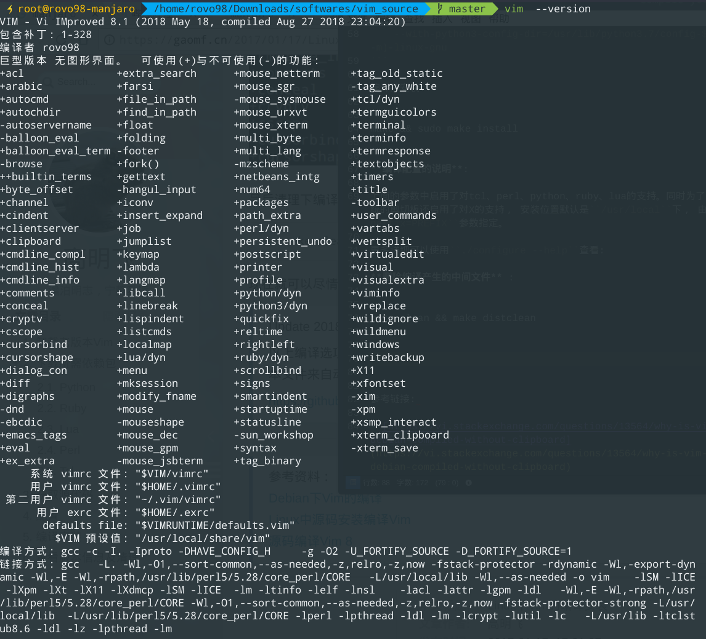

最近换了Manjaro linux系统，发现通过系统pacman -S vim安装的无图形版本vim不支持clipboard功能。

本想看能不能通过某种方式，来扩展现有安装好的vim,但是通过google了解到：
VIM is intended to be a portable editor that “just works” on all systems. By having the default version use the clipboard functionality, it will need to link against X11 libraries, and a separate version of VIM would need to be compiled for desktop versus server (no pre-installed X11/xorg) builds. This is why the vim and vim-gtk packages are provided.
VIM旨在成为一个可在所有系统上“正常工作”的便携式编辑器。通过使默认版本使用剪贴板功能，它将需要链接到X11库，并且需要针对桌面与服务器（没有预安装的X11 / xorg）构建编译单独版本的VIM。这就是提供vim和vim-gtk软件包的原因。
虽然知道gvim带有支持clipboard的vim，但是我又不想装gvim。自己的系统又有X11库和 Xorg，所以决定自己编译一个vim.
注意： 对于没有X11和Xorg的需要在编译前配置好，否则编译会出错.
一、从github上获取vim的源码
直接使用git clone vim仓库：
1 | git clone https://github.com/vim/vim.git vim_source |
二、配置、编译并安装
我的编译配置：
1 | make clean |
编译并安装:
1 | make && sudo make install |
编译配置的说明:
上面的参数中启用了对tcl、perl、python、ruby、lua的支持。同时为了使用系统的剪切板还启用了对X的支持， 安装位置默认是/usr/local下， 由--perfix=PREFIX参数指定。
更多详细可以使用./configure --help查看:
删除编译产生的中间文件 :
1 | make clean && make distclean |
成果:

为vim创建一个桌面图标:
vim.desktop:
1 | [Desktop Entry] |
把vim.desktop放到/usr/share/applications/下就行了。
现在可以享受你自己编译的vim了。